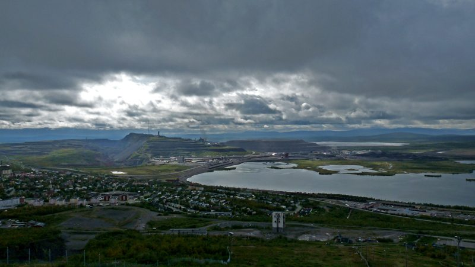
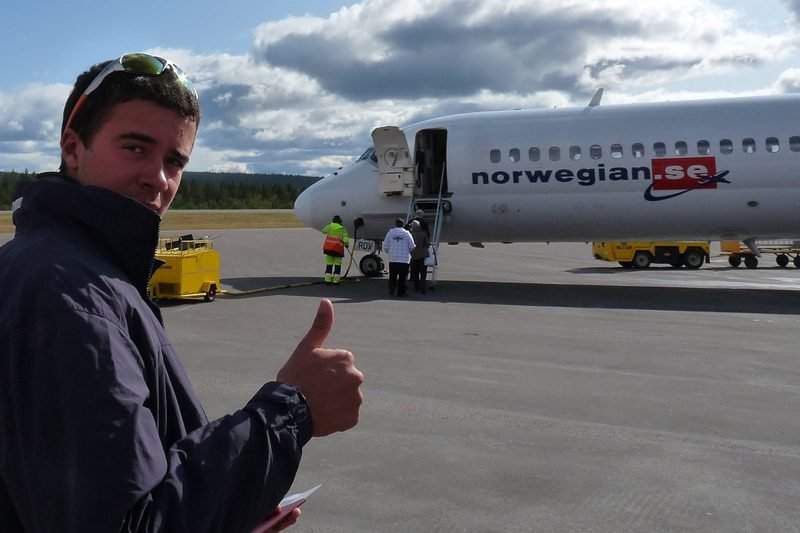

Resedagboken
Vår färd
I augusti 2009 lämnade fyra grabbar Arlanda med tält, stormkök och en ganska lös plan. Åtta dagar senare hade de bestigit Kebnekaise, blivit genomblöta och lärt sig en hel del om fjällvett.
Dag för dag
Från Arlanda till sydtoppen och hem igen
Klicka på en dag för att läsa hela dagboksanteckningen och se bilderna från dagen.

Dag 1
Avfärd och första tältnatten
Försenat flyg, snabb shopping i Kiruna och ett första läger vid sjön.

Dag 2
Mot fjällstationen
Fyra timmars vandring, renar vid tältet och väckning klockan fyra.

Dag 3
Sydtoppen
7,5 timmar uppför Kittelbäcken, Vierramvare och Kaffedalen.

Dag 4
Vilodag på fjällstationen
Kortspel, pasta och renhäng – och en klocka som springer iväg.

Dag 5
Tillbaka i regnet
Nio kilometer i ösregn, blöta kläder och en efterlängtad brasa.

Dag 6
Sista etappen till Nikkaluokta
Tidig morgon, kall dusch och buss till Kiruna – och pizza.

Dag 7
Kiruna från ovan
Skidbacken, kyrkan som var stängd och ett eget chillrum.

Dag 8
Hemresa
Sista morgonen, flygbussen och en sista bild innan hemfärd.
Film
Se resan när den hände
Klipp från dagarna på fjället och en kortfilm från bestigningen. Filmerna finns bevarade från den ursprungliga sidan och öppnas hos OneDrive respektive Vimeo.
Till filmerna